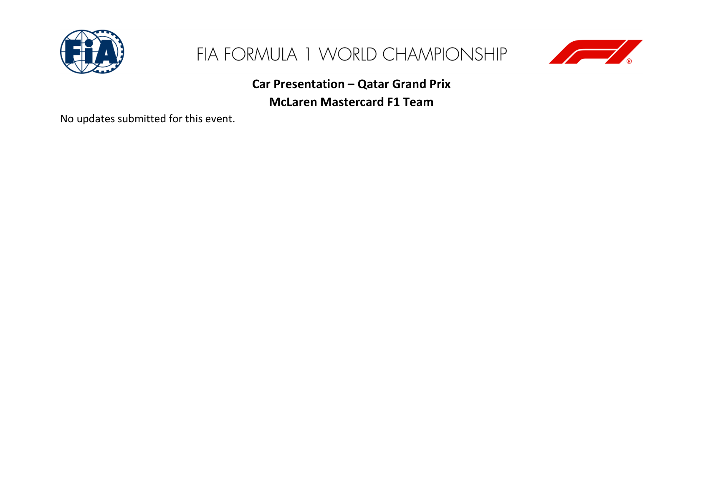
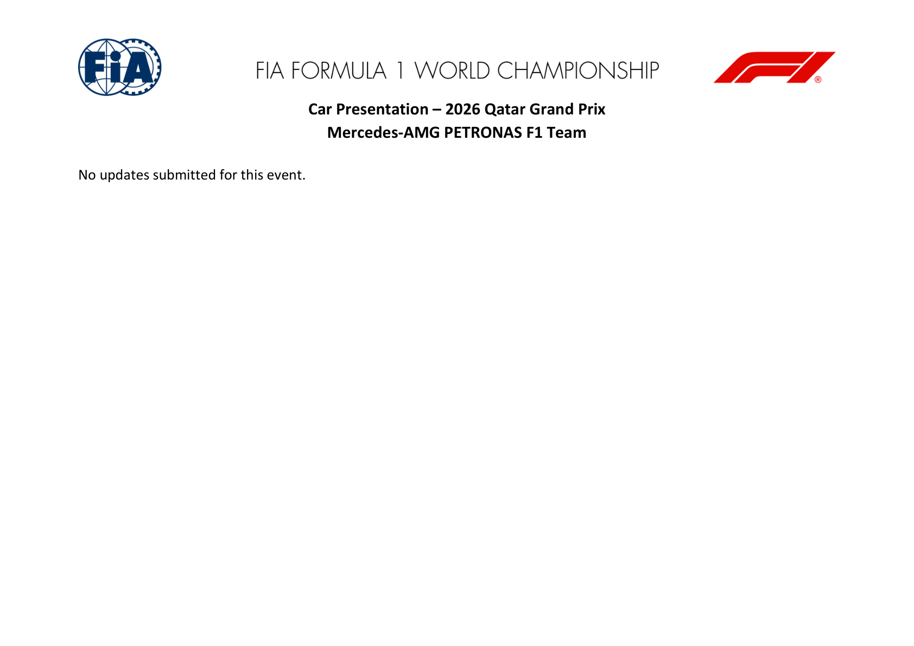
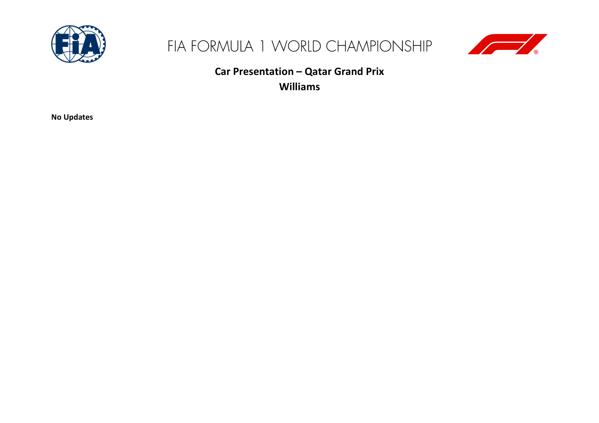
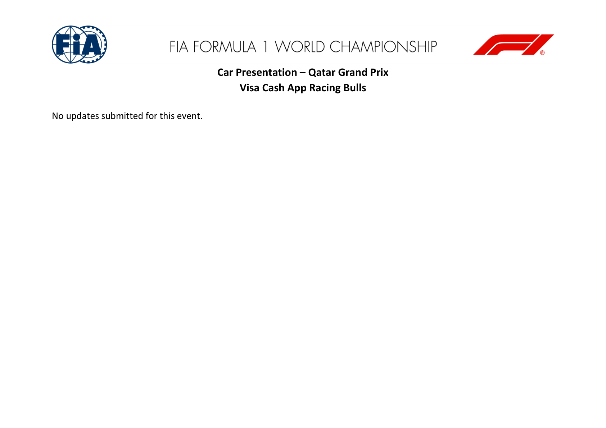
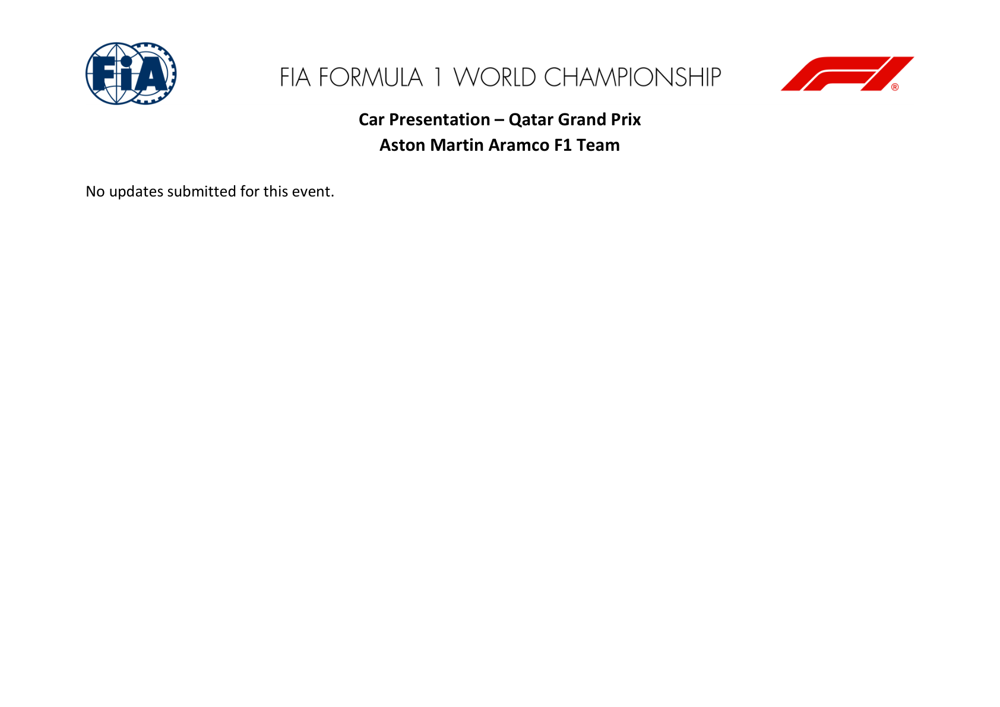
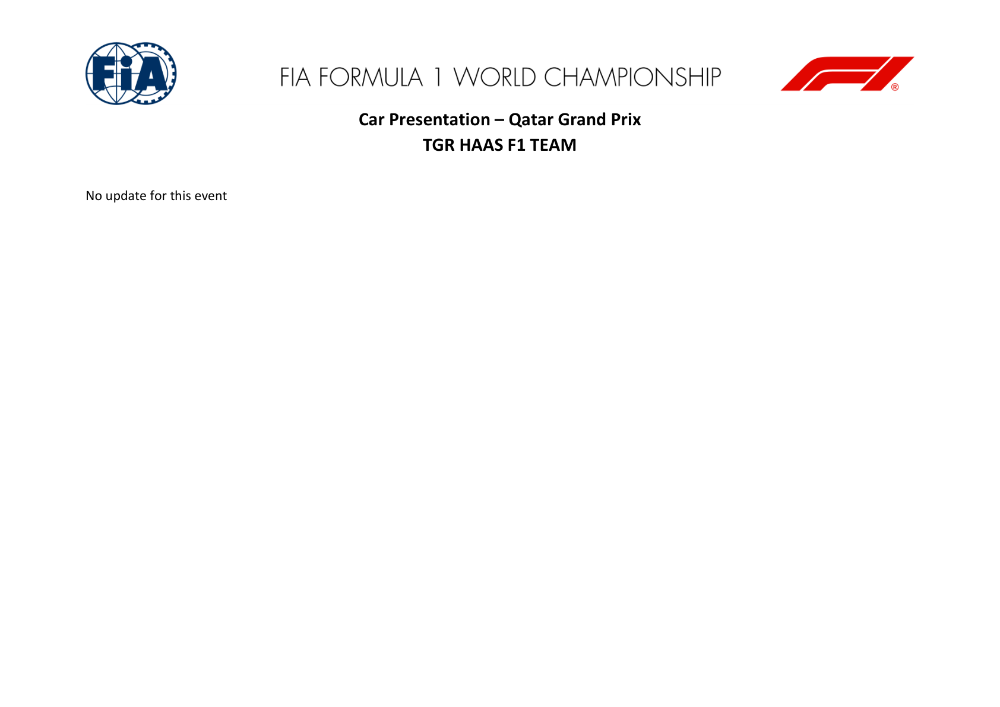
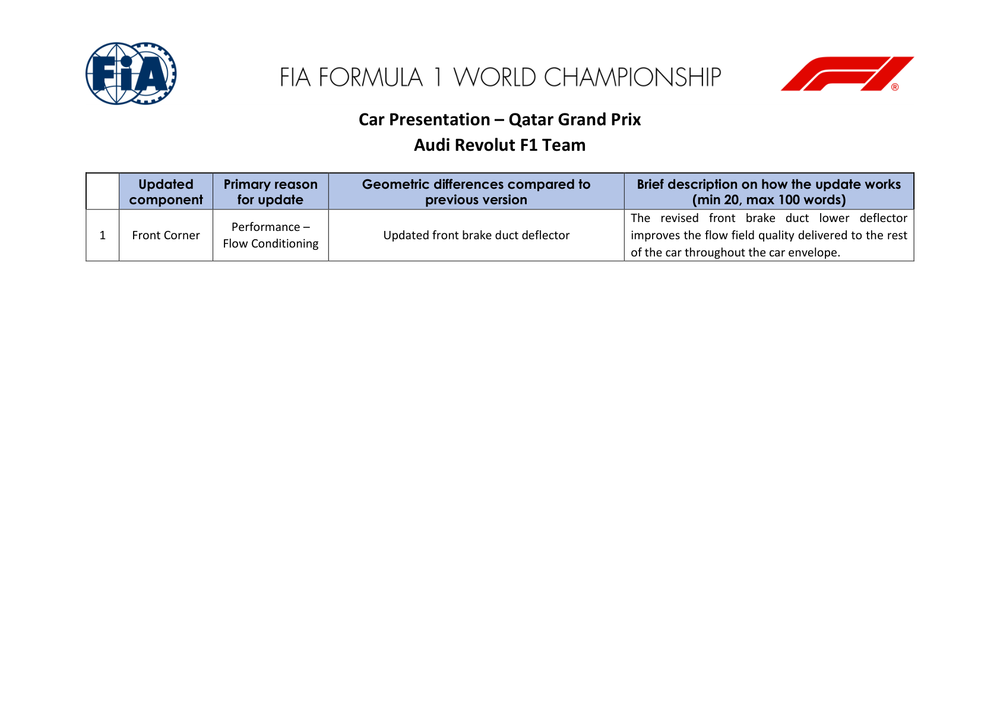
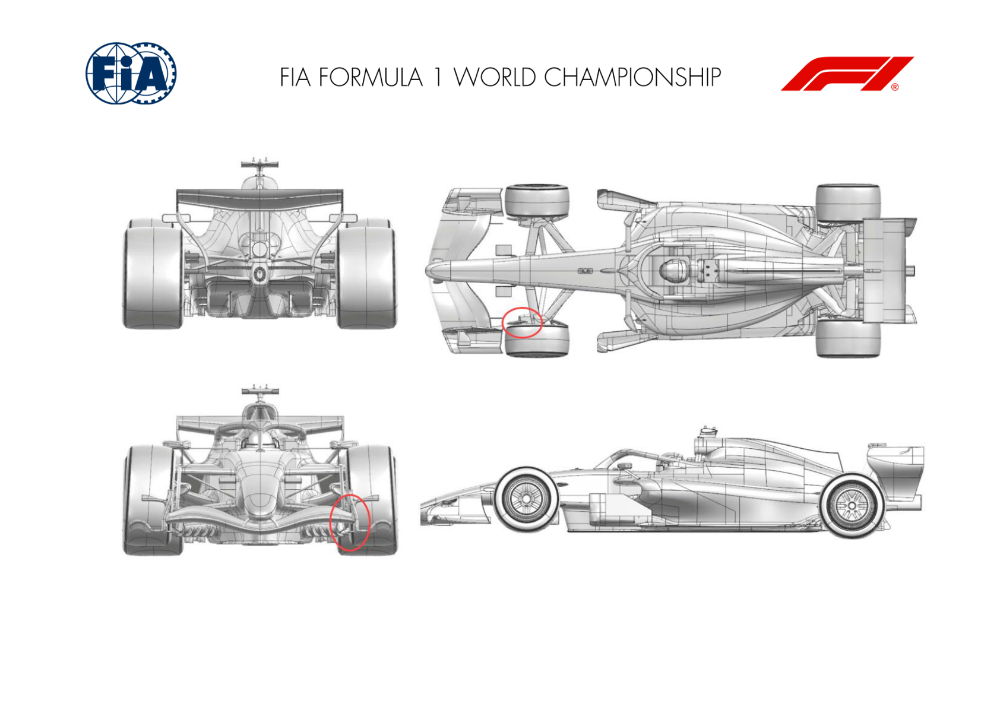
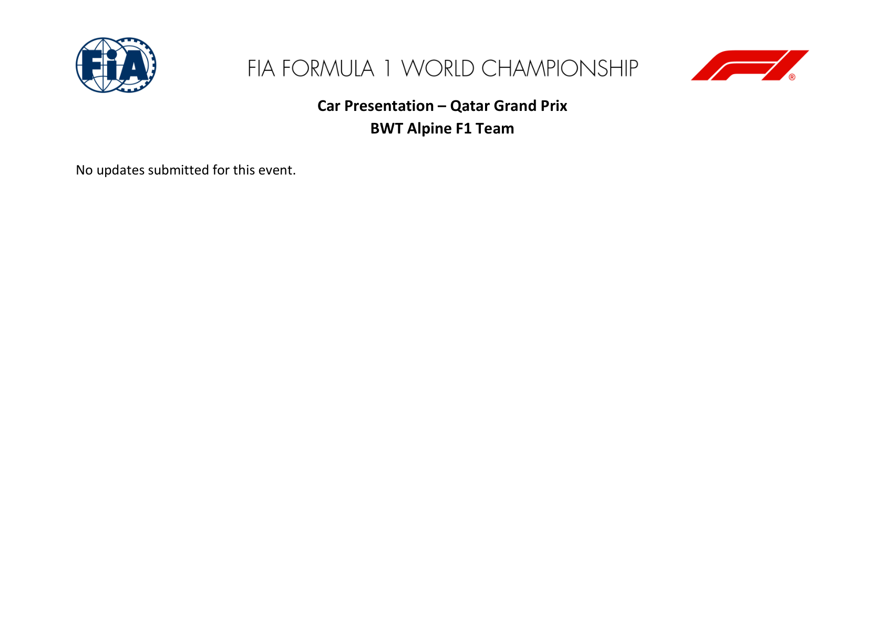
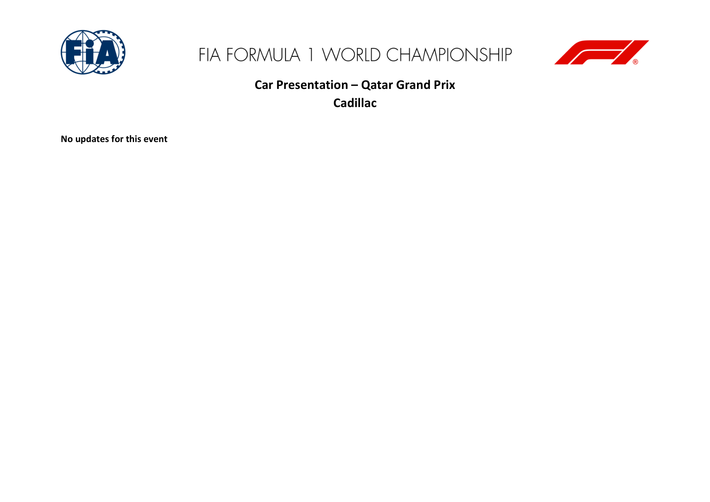

Car Development & Upgrades
FIA Document 12: one Audi item and explicit nil returns from ten other teams.
FIA official car-presentation, upgrade & parts-change documents
Official source; curated transcription may await review. Linked PDFs are the authority. Discovery does not extract or verify numeric values, and does not replace the curated material below.
Last successful FIA document discovery: 2026-11-27T20:44:44.708559+00:00. This is retrieval time, not issue time; newer revisions may exist.
- 2026_qatar_grand_prix_-_car_presentation_submissions.pdf (official PDF)
- 2026_qatar_grand_prix_-_car_display_procedure.pdf (official PDF)
How this page gets filled
- Teams must submit a car presentation to the FIA listing every changed component and the reason for the change.
- That document is published in the FIA event documents, normally on the Friday of the race week.
- Each entry gives the component, the geometric change and the intended performance effect — the most reliable upgrade source there is.
- Circuit-specific packages are common at Lusail International Circuit; general performance upgrades appear anywhere.
Source: FIA Document 12, Car Presentation Submissions, issued 27 November 2026. All eleven teams are included. Counts refer to declared component rows, not a ranking of performance gains or confirmation that both cars raced every item.
Team-by-team car presentation submissions
Choose Read page to view the team's official declaration here, with its diagram where supplied. The reader supports zoom and keeps the original PDF available as a separate source link.
| Team | Items | Declared areas | FIA source |
|---|---|---|---|
| McLaren | 0 | No updates submitted | Read page 2 |
| Mercedes | 0 | No updates submitted | Read page 3 |
| Red Bull Racing | 0 | No updates submitted | Read page 4 |
| Ferrari | 0 | No updates submitted | Read page 5 |
| Williams | 0 | No updates submitted | Read page 6 |
| Racing Bulls | 0 | No updates submitted | Read page 7 |
| Aston Martin | 0 | No updates submitted | Read page 8 |
| Haas | 0 | No updates submitted | Read page 9 |
| Audi | 1 | Front Corner | Read page 10 |
| Alpine | 0 | No updates submitted | Read page 12 |
| Cadillac | 0 | No updates submitted | Read page 13 |
What changed and why
The explanations below summarise each team's stated rationale, not independently measured lap-time gains. A nil return means no updates submitted for this event; it does not rule out setup changes or previously introduced parts.
McLaren — 0 declared items
No updates submitted for this event.
View official declaration

Mercedes — 0 declared items
No updates submitted for this event.
View official declaration

Red Bull Racing — 0 declared items
No updates submitted for this event.
View official declaration
Ferrari — 0 declared items
No updates submitted for this event.
View official declaration
Williams — 0 declared items
No updates submitted for this event.
View official declaration

Racing Bulls — 0 declared items
No updates submitted for this event.
View official declaration

Aston Martin — 0 declared items
No updates submitted for this event.
View official declaration

Haas — 0 declared items
No updates submitted for this event.
View official declaration

Audi — 1 declared item
- Front Corner: The revised lower front brake-duct deflector is described as improving flow-field quality delivered to the rest of the car. Filed reason: Performance - Flow Conditioning.
View official declaration and diagram


Alpine — 0 declared items
No updates submitted for this event.
View official declaration

Cadillac — 0 declared items
No updates submitted for this event.
View official declaration

FIA car-display procedure — Document 4
For Friday 27 November, the FIA requires one car from each team to be positioned in its pit-stop position between 15:00 and 16:00 local; the other car is to be available for viewing inside the garage. If only one car carries major aerodynamic or bodywork components not run at a previous Competition or TCC and intended for this event, that is the car to display. The outside car may be used for pit-stop practice, but must return to the same position when practice is not taking place. The notice also sets out an adverse-weather procedure. This governs the media display, not team upgrade declarations, and is distinct from the car-presentation submissions recorded in FIA Document 12. Original FIA Document 4, page 2.
Official FIA document screenshots
Automatically rendered from the official PDFs. These figures do not update or verify the curated numeric transcriptions above. Unchanged pages already illustrated above are not repeated here.
2026_qatar_grand_prix_-_car_display_procedure.pdf
PDF retrieved 2026-11-27T20:44:49+00:00; this is not its issue date.